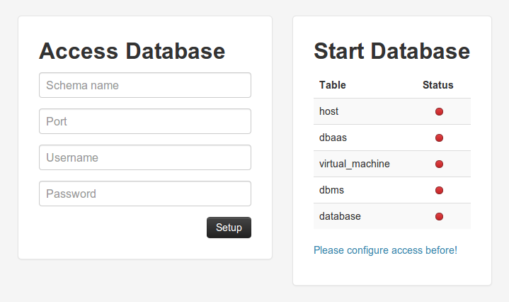
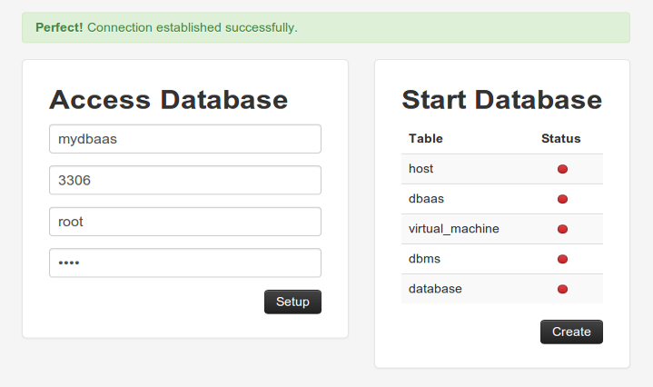
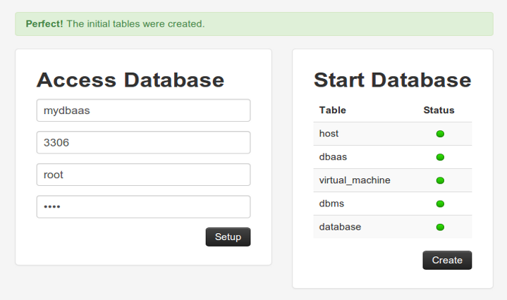

<!DOCTYPE html>
<!--[if lt IE 7 ]><html class="ie ie6" lang="en"> <![endif]-->
<!--[if IE 7 ]><html class="ie ie7" lang="en"> <![endif]-->
<!--[if IE 8 ]><html class="ie ie8" lang="en"> <![endif]-->
<!--[if (gte IE 9)|!(IE)]><!-->
<html class="not-ie" lang="en">
<!--<![endif]-->
<head>
<meta charset="utf-8">
<meta name="description" content="business portfolio site template" />
<meta name="keywords" content="business, marketing, corporate, app, software, marketing"/>
<meta name="author" content="Tansh" />
<meta name="viewport" content="width=device-width, initial-scale=1, maximum-scale=1"/>
<title>MyDBaaS - Framework</title>

<!--Fav and touch icons-->
<link rel="shortcut icon" href="img/icons/favicon.ico">
<link rel="apple-touch-icon" href="img/icons/apple-touch-icon.png">
<link rel="apple-touch-icon" sizes="72x72" href="img/icons/apple-touch-icon-72x72.png">
<link rel="apple-touch-icon" sizes="114x114" href="img/icons/apple-touch-icon-114x114.png">

<!--google web font-->
<link href='http://fonts.googleapis.com/css?family=Raleway:400,600,700' rel='stylesheet' type='text/css'>

<!--style sheet-->
<link rel="stylesheet" media="screen" href="css/bootstrap.css"/>
<link rel="stylesheet" media="screen" href="css/bootstrap-responsive.css"/>
<link rel="stylesheet" media="screen" href="css/style.css"/>

<!--jquery libraries / others are at the bottom-->
<script type="text/javascript" src="js/jquery-1.7.1.min.js"></script>
<script src="js/modernizr.js" type="text/javascript"></script>

<!--elastislide carousel script starts-->
<link rel="stylesheet" media="screen" href="css/elastislide.css"/>
<script type="text/javascript" src="js/jquery.elastislide.js"></script>
<script type="text/javascript">
$(document).ready(function() {
$('#carousel').elastislide({
    imageW    : 300,
    margin    : 20,
    border    : 0,
    easing    : 'easeInBack'
});
});
</script>
<!--elastislide carousel script ends-->

<!--prettify scripts starts-->
<script src="js/prettify.js" type="text/javascript"></script>
<link rel="stylesheet" media="screen" href="css/prettify.css"/>
<script>
// Activate Google Prettify in this page
addEventListener('load', prettyPrint, false);
$(document).ready(function(){
// Add prettyprint class to pre elements
$('pre').addClass('prettyprint');
}); // end document.ready
</script>
<!--prettify scripts ends-->

<!--contact form script starts-->
<script src="js/jquery.validate.js" type="text/javascript"></script>
<script src="js/jquery.form.js" type="text/javascript"></script>
<script type="text/javascript"> 
$(document).ready(function() {
        //Contact form
		$(function() {
		var v = $("#contactform").validate({
		submitHandler: function(form) {
		$(form).ajaxSubmit({
		target: "#result",
		clearForm: true
		});
		}
		});
		});
		//To clear message field on page refresh (you may clear other fields too, just give the 'id to input field' in html and mention it here, as below)
		$('#contactform #message').val('');
});
</script>
<!--contact form script ends-->

<!--prettyphoto scripts starts-->
<link rel="stylesheet" media="screen" href="css/prettyPhoto.css"/>
<script src="js/jquery.prettyPhoto.js" type="text/javascript"></script>
<script type="text/javascript">
$(document).ready(function() {  
    $('a[data-rel]').each(function() {
    $(this).attr('rel', $(this).data('rel'));
    });
    $("a[rel^='prettyPhoto[gallery1]']").prettyPhoto({
    animation_speed: 'fast',
    slideshow: 5000,
    autoplay_slideshow: false,
    opacity: 0.80,
    show_title: false,
    theme: 'pp_default', /* light_rounded / dark_rounded / light_square / dark_square / facebook */
    overlay_gallery: false,
    social_tools: false,
    changepicturecallback: function(){
    var $pp = $('.pp_default');
    if( parseInt( $pp.css('left') ) < 0 ){
    $pp.css('left', 0 );
    }
    }
    }); 
});
</script>
<!--prettyphoto scripts ends-->

</head>
<body>

<!-- header starts
================================================== -->
<section id="header" class="clearfix">
  <div class="container">
    <div class="row"> 
      
      <!--logo starts-->
      <div class="span4 logo">
        <p style="height:25px; font-size:28px; padding-top:7px; text-shadow:0px 2px 0px #000;">
          <span style="float:left; color:#646464;"><b>My</b></span>
          <span style="float:left; color:#d95b44;"><b>DBaaS</b></span>
          <span style="float:left; color:#646464;"><b>Framework</b></span>
        </p>
      </div>
      <!--logo ends-->
      
      <div class="span8 clearfix"> 
        
        <!--menu starts-->
        <div id="smoothmenu" class="ddsmoothmenu">
          <ul>
            <li><a href="index.html">Screencast</a></li>
            <li><a href="publications.html">Publications</a></li>
            <li><a href="about.html">About</a> </li>
            <li><a href="framework.html" class="selected">Framework</a> </li>
            <li><a href="api.html">API</a> </li>
          </ul>
        </div>
        <!--menu ends--> 
        
      </div>
    </div>
  </div>
</section>
<!-- header ends
================================================== --> 

<!-- header-btm starts
================================================== -->
<section id="header-btm" class="clearfix">
  <div class="container">
    <div class="row">
      <div class="span12">
        <h4 class="heading-icon">  Features</h4>
      </div>
    </div>
  </div>
</section>
<!-- header-btm ends
================================================== --> 

<!-- content starts
================================================== -->
<section id="content" class="clearfix">
  <div class="container">
    <div class="row"> 
      
      <!--main content starts-->
      <div class="main-content span12">
        <h4>How-to</h4>
        <div class="accordion"> 
          
          <!--first group starts-->
          <div class="accordion-group">
            <div class="accordion-heading"> <a class="accordion-toggle" data-toggle="collapse" href="#collapseOne">- How do I get started?</a> </div>
            <div id="collapseOne" class="accordion-body collapse in">
              <div class="accordion-inner">
                <p>To optimize the utilization we have created a <a href="http://github.com/araujodavid/mydbaas-starting-project" target="_blank">first draft</a> pre-configured with the initial structure of <b>MyDBaaS Framework</b>.</p>
                <ul class="list-unstyled">
                  <li>
                    <h5>1. Download</h5>
                    <p>You can download the <a href="http://github.com/araujodavid/mydbaas-starting-project/archive/master.zip" target="_blank">zip</a> file or do the <a href="http://github.com/araujodavid/mydbaas-starting-project/fork" target="_blank">fork</a> from the repository on GitHub.</p>
                  </li>
                  <li>
                    <h5>2. Import and Run</h5>
                    <p>Use the Eclipse to import the project. Once imported you can now carry out the monitoring of metrics already implemented by the framework. You can also extend and adapt to your needs as required. To run the project you need to add a Server in the workspace used (we indicate the Apache Tomcat 7). Then add the project to the server. <b>Now run!</b>.</p>
                    <p>2.1. Now you need to configure access to the database where it will be created the <b>knowledge base</b>. Use MySQL, you can change to another DBMS if you want.</p>
                    <p>2.2. Access the url <a href="http://localhost:8080/mydbaas/starter" target="_blank">http://localhost:8080/mydbaas/starter</a>. A form will appear as the first image below. You must enter the access data and then press <b>Setup</b>.</p>
                    <p>2.3. The data will be checked and if they are correct the option to create the initial tables will appear, as the second image. Click on the <b>Create</b> button.</p>
                    <p>2.3. The initial tables are created and the states will all green, as the third image.</p>
                    <div id="carousel" class="es-carousel-wrapper">
                      <div class="es-carousel">
                        <ul>
                          <li>
                            <div class="folio-thumb" style="width:300px; height:200px;"> <a href="img/preview/starter.png" data-rel="prettyPhoto[gallery1]" title="Setup page of the database" class="icon-zoom"></a></div>
                          </li>
                          <li>
                            <div class="folio-thumb" style="width:300px; height:200px;"> <a href="img/preview/starter2.png" data-rel="prettyPhoto[gallery1]" title="Connection accepted" class="icon-zoom"></a></div>
                          </li>
                          <li>
                            <div class="folio-thumb" style="width:300px; height:200px;"> <a href="img/preview/starter3.png" data-rel="prettyPhoto[gallery1]" title="Initial tables created" class="icon-zoom"></a></div>
                          </li>
                        </ul>
                      </div>
                    </div>
                    <p>The monitoring server is running and you can get the collection of existing metrics. There is also a repository with only the MyDBaaS Framework, <a href="http://github.com/araujodavid/mydbaas-framework" target="_blank">here</a>.</p>
                  </li>
                </ul>                
              </div>
            </div>
          </div>
          <!--first group ends--> 

          <div class="accordion-group">
            <div class="accordion-heading"> <a class="accordion-toggle" data-toggle="collapse" href="#collapse6">- How to run the monitoring agent?</a> </div>
            <div id="collapse6" class="accordion-body collapse in">
              <div class="accordion-inner">
                <p>With the server running just run the agents on desired resources. Set the <a class="accordion-toggle" data-toggle="collapse" href="#collapse5">context file</a> for the agents.</p>
                <ul class="list-unstyled">
                  <li>
                    <h5>1. Send</h5>
                    <p>The file <a href="http://github.com/araujodavid/mydbaas-starting-project/blob/master/mydbaas-agent/mydbaas-agent.jar" target="_blank">mydbaas-agent.jar</a> to the resource to be monitored, as well as the context file configured. You need to configure the file <a href="http://github.com/araujodavid/mydbaas-starting-project/tree/master/mydbaas-agent/lib" target="_blank">so or dll</a> equivalent to operating system of the resource. Below we show an example of this configuration:</p>
                    <pre class="prettyprint linenums">
#Example of configuration on Ubuntu 64-bit
#Put the file libsigar-amd64-linux.so inside the directory /usr/lib/
sudo mv [path]/libsigar-amd64-linux.so /usr/lib/</pre>
                  </li>
                  <li>
                    <h5>2. Run</h5>
                    <p>Now to run the monitoring agent access the directory that the files were placed.</p>
                    <p>Now run the JAR file. Below we show two options:</p>
                    <pre class="prettyprint linenums">
#First option: run and display the output on the console
java -jar mydbaas-agent.jar context.conf
#Second option: run and not display the output and lock the console
nohup java -jar mydbaas-agent.jar context.conf >/dev/null 2>&1&</pre>
                  </li>
                </ul>
              </div>
            </div>
          </div>
          
          <!--second group starts-->
          <div class="accordion-group">
            <div class="accordion-heading"> <a class="accordion-toggle" data-toggle="collapse" href="#collapseTwo">- How to create a new metric?</a> </div>
            <div id="collapseTwo" class="accordion-body collapse in">
              <div class="accordion-inner">
                <p>A <b>metric</b> is an entity that can be evaluated. Each metric is composed of one or more <b>measures</b> collected. Consequently, each metric must be clearly identified and defined his <a class="accordion-toggle" data-toggle="collapse" href="#collapseThree">collection procedure</a>. The collect of measures is performed repeatedly, at least once per iteration. The collected metrics are part of a profile evaluation, to be exploited in evaluating the progress and integrity of the environment. They can also be accumulated for future use of estimates and trends over resources.</p>
                <h5>To create a new metric we need to use common module:</h5>
                <ul class="list-unstyled">
                  <li>
                    <p>1. Create a new class.</p>
                  </li>
                  <li>
                    <p>2. If the metric is for Virtual Machine or Host extend the class with <b>AbstractMetric</b> (<a href="http://github.com/araujodavid/mydbaas-starting-project/blob/master/mydbaas-common/src/main/java/br/com/arida/ufc/mydbaas/common/metric/common/AbstractMetric.java" target="_blank">details</a>). If the metric is to DBMS or Database extend the class with <b>AbstractDatabaseMetric</b> (<a href="http://github.com/araujodavid/mydbaas-starting-project/blob/master/mydbaas-common/src/main/java/br/com/arida/ufc/mydbaas/common/metric/common/AbstractDatabaseMetric.java" target="_blank">details</a>).
                  </li>
                </ul>
				<pre class="prettyprint linenums">
import main.java.br.com.arida.ufc.mydbaas.common.metric.common.AbstractMetric;

public class Cpu extends AbstractMetric {
  //TODO
}</pre>
				<pre class="prettyprint linenums">
import main.java.br.com.arida.ufc.mydbaas.common.metric.common.AbstractDatabaseMetric;

public class Size extends AbstractDatabaseMetric {
  //TODO
}</pre>
  				<p>The measures of the metric are represented by the fields of the class, but the class can have other fields not intended measures. So we need to identify measures, you just put the <b>class name</b> in front of the fields that represent measures. <i>Why is it needed this pattern?</i> Because this identification allows the monitoring agent automatically create the HTTP request parameters to send to the server.</p>
  				<pre class="prettyprint linenums">
import main.java.br.com.arida.ufc.mydbaas.common.metric.common.AbstractMetric;

public class Cpu extends AbstractMetric {

  private double cpuUser;
  private double cpuSystem;	
  private double cpuNice;
  private double cpuWait;
  private double cpuIdle;
  private double cpuCombined;

  //Getters and Setters
}</pre>
				<pre class="prettyprint linenums">
import main.java.br.com.arida.ufc.mydbaas.common.metric.common.AbstractDatabaseMetric;

public class Size extends AbstractDatabaseMetric {

  private double sizeUsed;

  //Getters and Setters
}</pre>
              <p>Finally It is necessary to implement the inherited method <b>toString()</b> and <b>jsonToList()</b>. In the first implementation need only return the type of metric, e.g. machine, host or database. The second is necessary to implement a conversion from a json in a list of objects of the metric.</p>
              <pre class="prettyprint linenums">
@Override
public String toString() {
  return "database";
}</pre>
              <pre class="prettyprint linenums">
@Override
public List<Size> jsonToList(String json) {
  Gson gson = new Gson();
  List<Size> sizeList = gson.fromJson(json, new TypeToken<List<Size>>(){}.getType());
  return sizeList;
}</pre>
              <p>Now we have a new metric is necessary to create a <a class="accordion-toggle" data-toggle="collapse" href="#collapseThree">collector</a> for the monitoring agent and a <a class="accordion-toggle" data-toggle="collapse" href="#collapseFour">receiver</a> on the server.</p>
              </div>
            </div>
          </div>
          <!--second group ends--> 
          
          <!--third group starts-->
          <div class="accordion-group">
            <div class="accordion-heading"> <a class="accordion-toggle" data-toggle="collapse" href="#collapseThree">- How to create a new collector?</a> </div>
            <div id="collapseThree" class="accordion-body collapse in">
              <div class="accordion-inner">
                <p>A new <b>collector</b> is necessary to change the monitoring agent. A collector is used to collect information, which will then be used in a specific system on demand. Each collector is responsible for collecting the data of a particular <b>metric</b>. It has a cycle that determines how often the collection will be performed.</p>
                <h5>To create a new collector is required:</h5>
                <p><b>First step:</b> in this step we will create an extension of the metric.</p>
                <ul class="list-unstyled">
                  <li>
                    <p>1. Create a new class. To maintain a patterning the name should be the class name of the metric plus <i>Metric</i>.</p>
                  </li>
                  <li>
                    <p>2. It should extend the class of the <a class="accordion-toggle" data-toggle="collapse" href="#collapseTwo">new metric</a> created earlier and implement the <b>LoadMetric</b> interface, <a href="http://github.com/araujodavid/mydbaas-starting-project/blob/master/mydbaas-agent/src/main/java/br/com/arida/ufc/mydbaas/agent/entity/common/LoadMetric.java" target="_blank">details</a>.</p>
                  </li>
                  <li>
                    <p>3. With the created class implements the <b>Singleton</b> pattern. <i>Why do I need this?</i> Thus each metric will only have an instantiated object while the agent is active. Using less memory and reducing overhead.</p>
                  </li> 
                </ul>
                <pre class="prettyprint linenums">
import main.java.br.com.arida.ufc.mydbaas.agent.entity.common.LoadMetric;

public class SizeMetric extends Size implements LoadMetric {

  private static SizeMetric uniqueInstance;

  private SizeMetric() {}

  public static SizeMetric getInstance() {
    if (uniqueInstance == null) {
      uniqueInstance = new SizeMetric();
    }
    return uniqueInstance;
  }

  @Override
  public void loadMetricProperties(Properties properties) {
    //TODO
  }
}</pre>
              <p>In <b>loadMetricProperties()</b> method is where the configuration properties of the metric, as url and cycle, are loaded. You can configure new properties if necessary. In the metrics related to the database you need to upload identifiers which DBMSs and/or instances of databases that will be collected.</p>
              <p><b>Second step:</b> in this step we will create the collector.</p>
              <ul class="list-unstyled">
                  <li>
                    <p>1. Create a new class. Following the pattern the name should be the class name of the metric plus <i>Collector</i>.</p>
                  </li>
                  <li>
                    <p>2. It should extend the abstract class <b>AbstractCollector</b>, <a href="http://github.com/araujodavid/mydbaas-starting-project/blob/master/mydbaas-agent/src/main/java/br/com/arida/ufc/mydbaas/agent/collector/common/AbstractCollector.java" target="_blank">details</a>. And as parameter of the extension pass the class created above.</p>
                  </li>
                </ul>
                <pre class="prettyprint linenums">
import main.java.br.com.arida.ufc.mydbaas.agent.collector.common.AbstractCollector;

public class SizeCollector extends AbstractCollector&lt;SizeMetric&gt; {

  public SizeCollector(int identifier, String type) {
    super(identifier, type);
  }

  @Override
  public void loadMetric(Object[] args) throws Exception {
    // TODO Auto-generated method stub    
  }

  @Override
  public void run() {
    // TODO Auto-generated method stub    
  }
}</pre>
              <p>The class will inherit three methods. The first is the default constructor of the collector, it is not necessary to do anything. The second is the <b>loadMetric()</b>: in this method should be implemented the way collect the new metric. The third is the <b>run()</b> which is the heart of the collector. In this method is implemented the operation of the collector. Inside it called all other methods needed to collect and send to the server. Your new class also inherits two other methods that are already implemented. They are <b>logMetric()</b> and <b>sendMetric()</b>, <a href="http://github.com/araujodavid/mydbaas-starting-project/blob/master/mydbaas-agent/src/main/java/br/com/arida/ufc/mydbaas/agent/collector/common/AbstractCollector.java" target="_blank">details</a>. One to save a log of the metric case an error occurs preventing the sending to the server and the other to send the metric for the server, respectively.</p>
              <p>Here we show abstractly calls within the run method:</p>
              <pre class="prettyprint linenums">
@Override
public void run() {

  //First collected metrics
  this.loadMetric(new Object[] {...});

  //Second creates the request parameters to send to the server
  List&lt;NameValuePair&gt; parameters = null;
  parameters = this.loadRequestParams(...);

  //Third sends the collected metric to the server
  HttpResponse response;
  response = this.sendMetric(parameters);
}</pre>
              <p>The method <b>logMetric()</b> should be used in error checking of the methods <b>loadRequestParams()</b> and <b>sendMetric()</b>. <a href="http://github.com/araujodavid/mydbaas-starting-project/blob/master/mydbaas-agent/src/main/java/br/com/arida/ufc/mydbaas/agent/collector/database/SizeCollector.java" target="_blank">Here</a> you can see a real implementation. Now we have a new collector is necessary to create a <a class="accordion-toggle" data-toggle="collapse" href="#collapseFour">receiver</a> on the server.</p>
              </div>
            </div>
          </div>
          <!--third group ends--> 
          
          <!--fourth group starts-->
          <div class="accordion-group">
            <div class="accordion-heading"> <a class="accordion-toggle" data-toggle="collapse" href="#collapseFour">- How to create a new receiver?</a> </div>
            <div id="collapseFour" class="accordion-body collapse in">
              <div class="accordion-inner">
                <p>Assuming that a new metric was created following the step <a class="accordion-toggle" data-toggle="collapse" href="#collapseTwo">creating a new metric</a>. Then also created a collector following step creating a <a class="accordion-toggle" data-toggle="collapse" href="#collapseThree">new collector</a>. A <b>receiver</b> is a method that receives the measures collected from a particular <b>metric</b> sent by a <b>collector</b>. Measures are sent via HTTP Post requests and stored in a knowledge base through the metric repository.</p>
                <h5>To create a new receiver is required:</h5>
                <p><b>First step:</b> in this step we will create the receiver.</p>
                <ul class="list-unstyled">
                  <li>
                    <p>1. Create a new class. To maintain a patterning the name should be the type of the metric plus <i>ReceiverController</i>, in this case the metric is related to the machine. If the receiver of a particular type of metric already exists, skip to step two.</p>
                  </li>
                  <li>
                    <p>2. It should extend the abstract class <b>AbstractReceiver</b>, <a href="http://github.com/araujodavid/mydbaas-starting-project/blob/master/mydbaas-starting-project/src/main/java/br/com/arida/ufc/mydbaas/core/controller/receiver/common/AbstractReceiver.java" target="_blank">details</a>.</p>
                  </li>
                  <li>
                    <p>3. With the implemented class, use the <b>@Resource</b> annotation of <a href="http://vraptor.caelum.com.br" target="_blank">VRaptor</a> framework. Resource is what we might think of as resources to be made ​​available for access by our collectors. Once you insert this annotation in class, all public methods of it become accessible through calls GET or POST to specific URIs.</p>
                  </li>
                  <li>
                    <p>4. Finally use the <b>@Path</b> annotation on the class, also of VRaptor. Allows the customization of URIs for accessing the methods. The parameter should be the name of the metric type of the receiver, in this case machine. With that all URIs from the receiver will be identified by the type of metric.</p>
                  </li>  
                </ul>
                <pre class="prettyprint linenums">
import br.com.caelum.vraptor.Path;
import br.com.caelum.vraptor.Resource;
import br.com.caelum.vraptor.view.DefaultStatus;
import main.java.br.com.arida.ufc.mydbaas.core.repository.MetricRepository;
import main.java.br.com.arida.ufc.mydbaas.core.controller.receiver.common.AbstractReceiver;

@Resource
@Path("/machine")
public class MachineReceiverController extends AbstractReceiver {

  public MachineReceiverController(DefaultStatus status, MetricRepository metricRepository) {
    super(status, metricRepository);
    // TODO Auto-generated constructor stub
  }
}</pre>
              <p><b>Second step:</b> In this step we will create the method that receives the metric.</p>
              <ul class="list-unstyled">
                  <li>
                    <p>1. Create a new method with the same name as the new metric. The method must be <b>public</b> and <b>void</b>.</p>
                  </li>
                  <li>
                    <p>2. This new method can have three variations: when is virtual machine or host, or DBMS/database instance (as examples below). By default the method should contain a parameter that represents what metric the method receives, the name must be <b>metric</b>. The second parameter is a string that represents the exact time when the metric was collected, the name should be <b>recordDate</b>. The last parameter is the resource which the metric belongs and must be of type integer. This parameter varies with the kind of the metric. If the metric is about Virtual Machine the name should be <b>machine</b> and if it is about Host the name should be <b>host</b>. If the metric is about DBMS/database instance you need to add two integer fields, <b>dbms</b> and <b>database</b>. This happens because this type of metric can be collected at both resource levels.</p>
                  </li>
                  <li>
                    <p>3. Use the <b>@Path</b> annotation on the method to identify its URI. The parameter should be the name of the metric, which method is responsible.</p>
                  </li>
                  <li>
                    <p>4. The implementation is simple, just use the inherited object <b>metricRepository</b> and call the method <b>saveMetric()</b>, <a href="http://github.com/araujodavid/mydbaas-starting-project/blob/master/mydbaas-starting-project/src/main/java/br/com/arida/ufc/mydbaas/core/repository/MetricRepository.java" target="_blank">details</a>.</p>
                  </li>
                  <li>
                    <p>5. The method <b>saveMetric()</b> returns a boolean. Check and if the return is true use the inherited object status and call the method <b>accepted()</b>. This method will return Accepted Status (202) to the collector who made the request.</p>
                  </li>
                </ul>
                <pre class="prettyprint linenums">
@Post("/memory")
public void memory(Memory metric, int machine, String recordDate) {
  try {
    if (repository.saveMetric(metric, recordDate, machine, 0, 0, 0)) {
      status.accepted();
    }
  } catch (NoSuchMethodException e) {
    // TODO Auto-generated catch block
    e.printStackTrace();
  } catch (IllegalAccessException e) {
    // TODO Auto-generated catch block
    e.printStackTrace();
  } catch (InvocationTargetException e) {
    // TODO Auto-generated catch block
    e.printStackTrace();
  }
}</pre>
                <pre class="prettyprint linenums">
@Post("/size")
public void size(Size metric, int dbms, int database, String recordDate) {
  try {
    if (repository.saveMetric(metric, recordDate, 0, 0, dbms, database)) {
      status.accepted();
    }
  } catch (NoSuchMethodException e) {
    // TODO Auto-generated catch block
    e.printStackTrace();
  } catch (IllegalAccessException e) {
    // TODO Auto-generated catch block
    e.printStackTrace();
  } catch (InvocationTargetException e) {
    // TODO Auto-generated catch block
    e.printStackTrace();
  } 
}</pre>
                                <pre class="prettyprint linenums">
@Post("/hostdomains")
public void hostDomains(HostDomains metric, int host, String recordDate) {
  try {
    if (repository.saveMetric(metric, recordDate, 0, host, 0, 0)) {
      status.accepted();
    }
  } catch (NoSuchMethodException e) {
    // TODO Auto-generated catch block
    e.printStackTrace();
  } catch (IllegalAccessException e) {
    // TODO Auto-generated catch block
    e.printStackTrace();
  } catch (InvocationTargetException e) {
    // TODO Auto-generated catch block
    e.printStackTrace();
  } 
}</pre>
                <p><a href="http://github.com/araujodavid/mydbaas-starting-project/tree/master/mydbaas-starting-project/src/main/java/br/com/arida/ufc/mydbaas/core/controller/receiver" target="_blank">Here</a> you can see real implementations.</p>
              </div>
            </div>
          </div>
          <!--fourth group ends-->

          <div class="accordion-group">
            <div class="accordion-heading"> <a class="accordion-toggle" data-toggle="collapse" href="#collapse5">- How to set the agent' context file?</a> </div>
            <div id="collapse5" class="accordion-body collapse in">
              <div class="accordion-inner">
                <p>The <b>context file</b> has the properties of a monitoring agent must perform on resources. This file is loaded by the agent that from the information automatically configures itself. This file contains information such as the URL of the server, the identifier of the resource, the resource type and configurations of the metrics.</p>
                <p><b>1.</b> The first information is about the server and the monitored resource:</p>
                <pre class="prettyprint linenums">
# Unique code to identify the resource on the server
identifier =

# Resource type
type =

# Server URL
server =</pre>
              <p>The <b>identifier</b> field must have the resource code registered in the knowledge base. The <b>type</b> field should have the type of resource (machine or host). The <b>server</b> field must have the default url of the server .</p>
              <p><b>2.</b> Field that allows the monitoring agent to collect information about the physical configuration of a machine or host:</p>
              <pre class="prettyprint linenums">
# URL to send request about machine system:
about = machine/info

or

# URL to send request about host system:
about = host/info</pre>
              <p>This option is loaded based on the content <b>type</b> field. The value of this field is the url for receiving this information on the server. It is concatenated to the value of the <b>server</b> field.</p>
              <p><b>4.</b> Setting the information about the metrics that will be collected:</p>
              <pre class="prettyprint linenums">
# Example: metric of virtual machine
cpu.url = machine/cpu
cpu.cycle = 

# Example: metric of host
hostDomains.url = host/hostdomains
hostDomains.cycle =

# Example: metric of DBMS/database instance
size.url = storage/size
size.cycle =
size.dbms =
size.databases =</pre>
                <p>The metrics of virtual machine or server follow the same pattern. Each metric should have two fields in the file: <b>.url</b> and <b>.cycle</b>. These fields are completed with the name of the class that was created to represent the metric, as the example above. The first field contains the url provided in the server to receive the particular metric. The second field contains the value in seconds of the monitoring cycle. Represents the time window in which the agent will perform the monitoring of the metric. In the case of metrics for DBMS/database instance is possible to add two more fields: <b>.dbms</b> and <b>.databases</b>. They are also completed by the name of the metric. The value of these fields are composed by the codes of the DBMSs/databases that will be monitored. The codes are separated by a comma.</p>
              </div>
            </div>
          </div>

        </div>
      </div>
      <!--main content ends--> 
      
    </div>
  </div>
</section>
<!-- content ends
================================================== --> 

<!-- footer starts
================================================== -->
<footer id="footer" class="clearfix">
  <div class="container"> 
        
    <!--row starts-->
    <div class="row">       
      <!--column two starts-->
      <div>
           ARiDa Lab. Federal University of Ceará, Pici, 952 - Fortaleza, 60455-760 </br> (85) 3366-9847 ext. 216
        </ul>
      </div>
      <!--column two ends-->      
    </div>
    <!--row ends--> 
    
  </div>
</footer>
<!-- footer ends
================================================== --> 

<!-- copyright starts
================================================== -->
<section id="copyright" class="clearfix">
  <div class="container">
    <div class="row">
      <div class="span12">
        <p> © Copyright 2013</p>        
      </div>
    </div>
  </div>
</section>
<!-- copyright ends
================================================== --> 

<!--other jqueries required--> 
<script src="js/bootstrap.js" type="text/javascript" ></script> 
<script src="js/ddsmoothmenu.js" type="text/javascript" ></script> 
<script src="js/twitter.js" type="text/javascript" ></script> 
<script src="js/jquery.easing.1.3.js" type="text/javascript" ></script> 
<script src="js/custom.js" type="text/javascript" ></script>
</body>
</html>